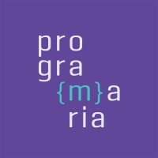
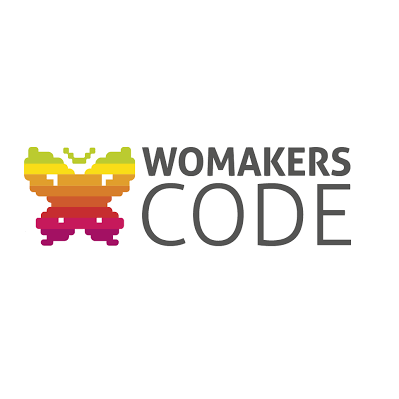
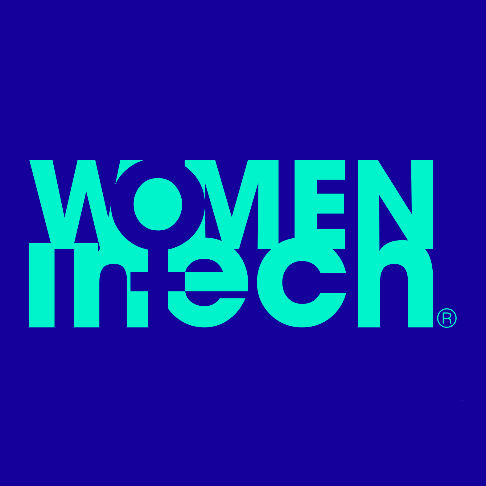

Comunidades feitas por Mulheres para Mulheres
Devido a crescente demanda por profissionais qualificados nas diversas áreas relacionadas à Tecnologia, mulheres - que já estão inseridas nessas áreas, se unem para criar iniciativas e apoiar outras mulheres a entrarem no setor. As ações vão desde eventos presenciais e online até cursos e mentorias. Conheça abaixo algumas dessas comunidades e faça parte você também.
-
Cloud Girls

O Maior Meetup de Cloud do Mundo é das Mulheres!
A comunidade proporciona às suas participantes a possibilidade de aperfeiçoamento, recolocação, networking e muita diversão em um momento exclusivo para as mulheres. -
PrograMaria
A comunidade tem como objetivo empoderar mulheres através da tecnologia diminuindo o gap de gênero no mercado de trabalho.
-
{reprograma}

A {reprograma} é uma iniciativa de impacto social que foca em ensinar programação para mulheres cis e trans que não têm recursos e/ou oportunidades para aprender a programar.
-
UX para Minas Pretas
A edtech conecta e profissionaliza mulheres negras para o mercado de tecnologia e UX.
E trabalha constantemente para potencializar o sucesso pessoal, profissional e educacional de mulheres negras. -
WoMakersCode
Mais Mulheres em Tech, nasceu da parceria entre Microsoft e WoMakersCode, para impulsionar a formação de mulheres no mercado de tecnologia, oferecendo trilhas de capacitação gratuita e online, nas áreas de Computação em Nuvem, Infraestrutura, Segurança da Informação, DevOps, Desenvolvimento e Ciência de Dados e Inteligência Artificial.
-
Women in Tech
Organização Global sem fins lucrativos que tem como missão capacitar 5 milhões de mulheres e meninas em tecnologia até 2030.
Oferece eventos para quem deseja se informar e atualizar sobre o mercado de TI.